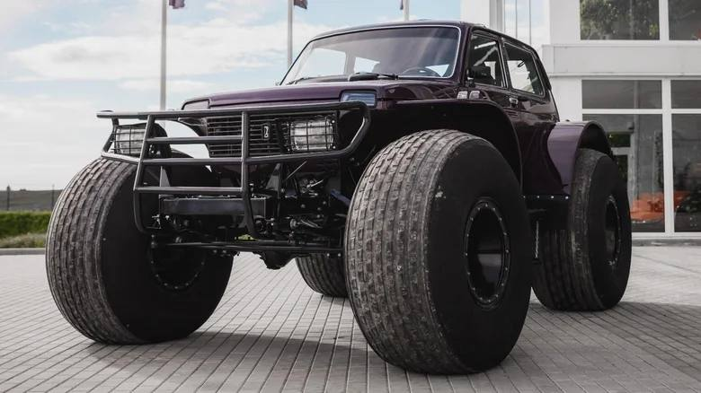
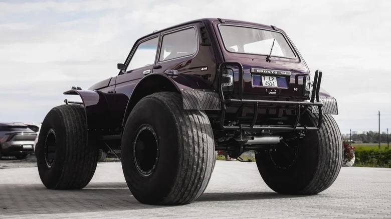
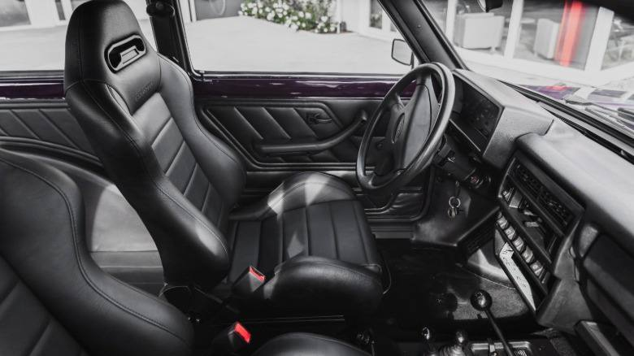

Тачки и Точка
@tachki
Тачки и Точка
@tachki
В Германии продают Ниву на ГИГАНТСКИХ колёсах вездеход Lada Niva Marsh оценили почти в 2 миллиона.



В Германии продают Ниву на ГИГАНТСКИХ колёсах — вездеход Lada Niva Marsh оценили почти в ₽2 миллиона.
Машину 2002 года построили для езды по болотам, снегу и грязи. Она получила огромные шины низкого давления, увеличенный клиренс, доработанную подвеску и специальные мосты. При этом под капотом остался обычный 1,7-литровый мотор на слабые 79 сил.
Всего выпустили менее тысячи таких вездеходов, а выставленный экземпляр полностью отреставрировали. Теперь за бесшумную Ниву просят €19 999 (₽1,9 миллиона).
🚙 Тачки и Точка
Машину 2002 года построили для езды по болотам, снегу и грязи. Она получила огромные шины низкого давления, увеличенный клиренс, доработанную подвеску и специальные мосты. При этом под капотом остался обычный 1,7-литровый мотор на слабые 79 сил.
Всего выпустили менее тысячи таких вездеходов, а выставленный экземпляр полностью отреставрировали. Теперь за бесшумную Ниву просят €19 999 (₽1,9 миллиона).
🚙 Тачки и Точка